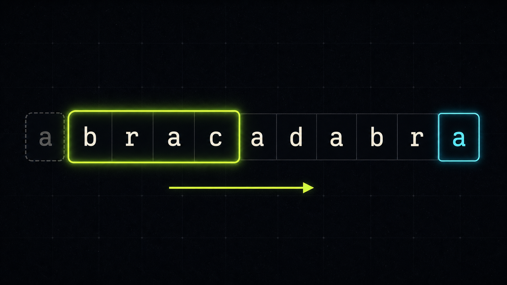
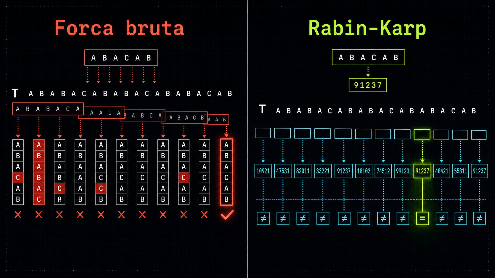
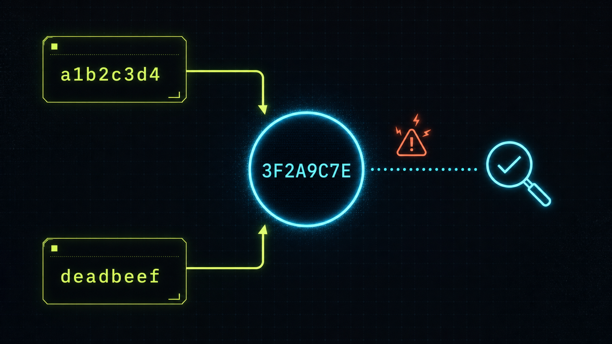

Teoria da Computação · Análise de Algoritmos
Busca de padrão em texto & análise de complexidade de tempo
Roteiro
01 · Descrição do algoritmo
T (tamanho n) e um padrão P (tamanho m), contar todas as ocorrências de P em T.01 · Lógica geral
BASE = 256, MOD = 1.000.000.007.
Intuição

Força bruta compara tudo (muitas falhas) → O(n·m). RK compara hashes e só verifica no acerto.
Por que verificar?

Hashes iguais não garantem strings iguais. No acerto de hash, confirmamos caractere a caractere, por isso a verificação exata continua necessária.
01 · Pseudocódigo
RABIN_KARP(T, P)
n ← |T| ; m ← |P|
se m = 0 ou n = 0 ou m > n: retorne 0
fator ← BASE^(m-1) mod MOD
hash_padrao ← hash(P)
hash_janela ← hash(T[0..m-1])
ocorrencias ← 0
para inicio de 0 ate n - m:
se hash_janela = hash_padrao:
se T[inicio..inicio+m-1] = P: # confirma (evita colisao)
ocorrencias ← ocorrencias + 1
se inicio < n - m: # rolagem em O(1)
hash_janela ← atualiza_rolling_hash(...)
retorne ocorrencias02 · Classificação assintótica
| Notação | Limite | No Rabin–Karp |
|---|---|---|
| Big-O | superior | O(n·m) — toda janela pode exigir verificação |
| Big-Ω | inferior | Ω(n+m) — sempre percorre as n−m+1 janelas |
| Big-Θ | justo | Θ(n+m) no melhor/médio · Θ(n·m) no pior |
Pré-processamento Θ(m); laço principal Θ(n) com rolagem O(1); verificações O(v·m). Com m fixo (=16), o pior caso cresce quase linear em n (constante maior); o termo quadrático aparece quando m cresce junto com n.
03 · Aplicabilidade
Parte II
Simulação · medições reais · C × Python
04 · Simulação com dados
Três tamanhos de entrada — pequena (n=2.000), média (n=20.000) e grande (n=100.000) — com padrão m = 16 fixo. 30 rodadas por combinação → 540 medições; mede-se só a função de busca.
| Cenário | Entrada usada | Objetivo |
|---|---|---|
| Melhor | T = "A…A", P = "B…B" | hash quase nunca coincide |
| Médio | texto e padrão pseudoaleatórios (ACGT) | representar entrada típica |
| Pior | T = "A…A", P = "A…A" | casar em quase toda janela |
Validação
| Cenário | n = 2.000 | n = 20.000 | n = 100.000 |
|---|---|---|---|
| Melhor | 0 | 0 | 0 |
| Pior | 1.985 | 19.985 | 99.985 |
Melhor caso nunca casa (0 ocorrências). Pior caso casa em quase toda janela: exatamente n − m + 1. Caso médio usa texto pseudoaleatório, com pouquíssimas ocorrências.
05 · Tabelas
| Cenário | C (ms) | Python (ms) | Python / C |
|---|---|---|---|
| Melhor | 1,35 | 74,8 | 55× |
| Médio | 1,38 | 59,7 | 43× |
| Pior | 1,68 | 302,4 | 180× |
C é dezenas de vezes mais rápido. No pior caso a diferença chega a ~180×: a verificação caractere a caractere domina e, em Python, é cara.
05 · Gráficos · Python
Pontos medidos acompanham a referência linear Θ(n) (m fixo). Pior caso paralelo, porém acima: verificação repetida em código interpretado.
05 · Gráficos · C
Mesma tendência linear, tempos ~50× menores. Pior caso só um pouco acima: a verificação nativa é barata.
05 · Gráficos · Visão geral
Escala log–log. Duas faixas nítidas: Python (acima) e C (abaixo). Mesma inclinação ⇒ mesma classe de crescimento; muda a constante.
05 · Desempenho · C × Python
~40–60× nos casos melhor/médio; no pior caso sobe para 138–180×, porque a verificação domina e o laço puro de Python é caro.
06 · Análise de casos
A força do Rabin–Karp é o caso médio coincidir com o melhor; a fraqueza é o pior caso, quando colisões/repetições forçam a verificação em toda janela.
07 · Reflexão final
Conclusão
Ambiente de execução
| Processador | Intel Core i7-7500U @ 2.70 GHz (2.90 GHz) |
| Memória RAM | 20,0 GB (utilizável: 19,9 GB) |
| Sistema operacional | Windows 10 de 64 bits (x64) |
| Medição em Python | time.perf_counter() |
| Medição em C | QueryPerformanceFrequency() + QueryPerformanceCounter() |
| Compilação (C) | gcc -O2 |
Tempos absolutos dependem de processador, memória, SO, processos em segundo plano e estado térmico — por isso reportamos médias de 30 rodadas.
Fim
Perguntas?